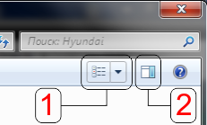
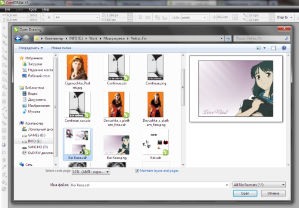

Предпросмотр
DrHunter / 06.03.2010, 07:15/00:41
Форум:
Подскажите пожалуйста как включить окно предпросмотра файла при открытии файла в корел уже год муучаюсь
Подскажите пожалуйста как включить окно предпросмотра файла при открытии файла в корел уже год муучаюсь
Не знаю как на висте, есть или нет пункт 2, но вот 1 на вашем скрине есть, так что используйте его :)

ПС. А что это за "Специально для Dr.Hunter"? :D
Честно говоря не понял что использовать, у меня виста, меня интересует вот такой предпросмотр как допустим в 8 версии(на приложенном изображении).
А специально для DrHunter где то в реестре редактируется что то, сейчас не помню но если найду сообщу.
Добавлено (16.03.2010, 23:06)
---------------------------------------------
Вот по поводу изменения надписи
Делается это так:
При помощи любого редактора ресурсов (рассмотрено на примере программы ResHacker в русской версии Corel) открываем файл
C:\Program Files\Corel\CorelDRAW Graphics Suite X4\Languages\RU\Programs\CRLUTLINTL.dll
Выбираем: String Table -> 1238 -> В правом окне: строка - <19801, "Не для перепродажи">
После изменения жмем на кнопку "Компелировать", сохраняем изменения и перегружаемся.
Не будет такого просмотра, есть ведь режим эскизов. А в Win7 и того лучше (см. attched file). Хотя может и в висте так же. Виста у меня стояла только 15 минут, после чего была просто отформатирована :D

А по поводу надписи - знаю я что такое редакторы ресурсов... баловался лет 5 назад. Я имел виду зачем это вообще? или так, от скуки? ;D
Было несколько свободных минут вот и поизвращался
Добавлено (17.03.2010, 00:25)
---------------------------------------------
Режим нашел но мне не то нужно я видел 14 корел именно с предпросмотром в окне открытия вот и ищу тоже самое. Скачал X5 там вроде как режим галлереи ест буду разбираться. И ли посоветуй как лучше просматривать большое количество файлов что бы видеть где и что именно в корел
http://cdrpro.ru/forum/13-138-1
В Х5 есть Connect